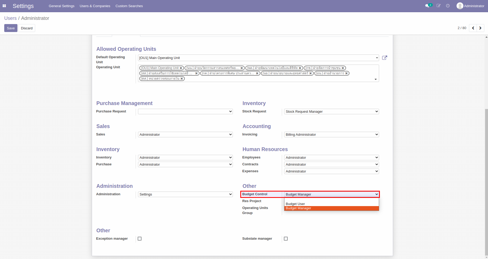
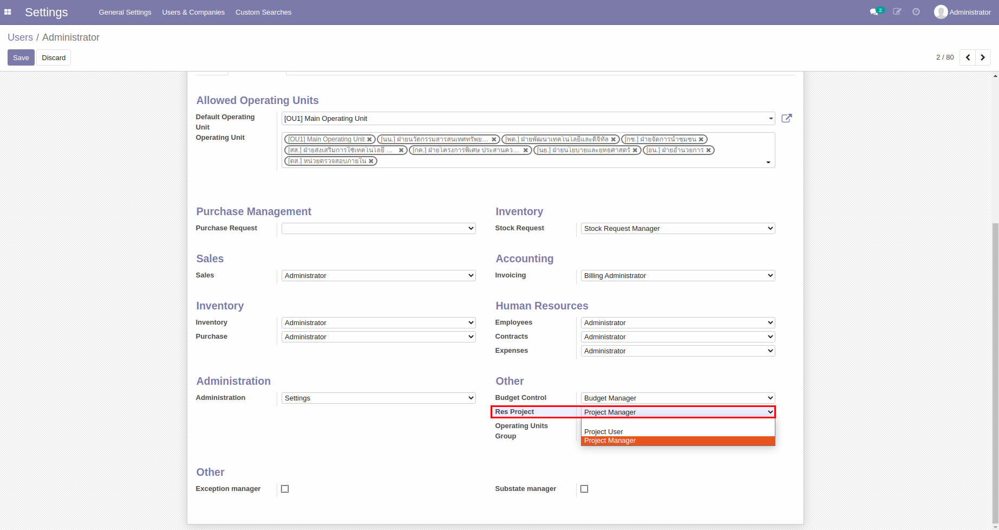
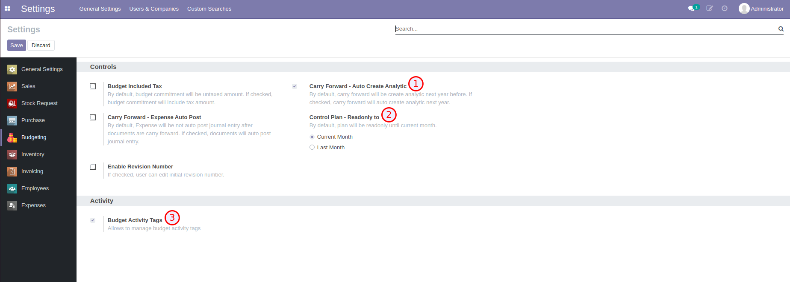

ระบบบริหารงบประมาณ (Budgeting Management System)#
เอกสารนี้สำหรับ :: ผู้ดูแลระบบ (System Administrator)
- การตั้งค่าสิทธิ์สำหรับผู้ใช้งาน
- การตั้งค่าโมดูล Budgeting
1. การตั้งค่าสิทธิ์สำหรับผู้ใช้งาน#
Menu :: Settings > Users & Companies > Users
- สำหรับพนักงานทั่วไป ต้องมีสิทธิ์เป็น Budget User
- สำหรับพนักงานที่อยู่ในฝ่ายแผน ต้องมีสิทธิ์เป็น Budget Manager และ Project Manager


2. การตั้งค่าโมดูล Budgeting#
Menu :: Settings > Budgeting
- Carry Forward - Auto Create Analytic: เลือกเพื่อให้ระบบสร้าง Analytic Account ของปีถัดไปให้อัตโนมัติ
- Control Plan - Readonly to: เลือกว่าต้องการให้ไม่สามารถแก้ไขแผนการใช้จ่ายรายเดือนได้ถึงเดือนไหน
- Current Month: เดือนปัจจุบัน
- Last Month: เดือนก่อนหน้า
- Budget Activity Tags: เลือกเพื่อให้สามารถติด Tag ที่ Activity ได้ ซึ่งการติด Tag จะช่วยในการค้นหา Activity ที่จะใช้ในการสร้างเอกสารขอใช้งบประมาณ เช่น PR, PO, AV, EX
